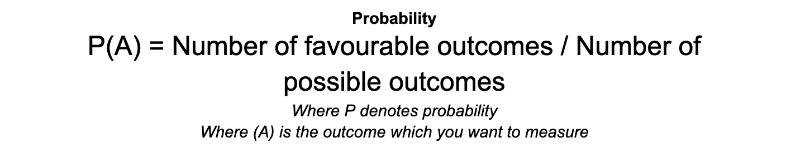
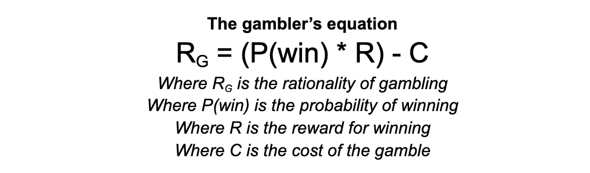

In the previous section we considered a few of the issues with the rational voter model. In this section, we will review the role of probability in electoral calculus. Let’s dive into a bold statement: voting, in its core, can be considered a fundamentally irrational act.
At first glance, this may sound controversial, but let’s break it down—it doesn’t mean voting is unimportant - there are reasons to vote which are not tied to the narrow concept of rationality, for instance civic duty or the virtue of being an active member of a democracy. However, we shouldn't disregard the reality of the potential reward for voting, the the likelihood that our vote will make an impact, or individual's costs incurred by voting. Let's take each of these in turn.
The reward for voting is simple: your preferred candidate wins and directly influences future policies in your favour. This is a core consideration in the rational voter model.
The likelihood of impact is another way of saying what the chances of your candidate winning are. Why vote for a dud candidate who is unlikely to win? As we saw with the rational voter, it is important to consider whether a candidate can actually win a district.
The cost of voting isn’t just the act of casting a ballot—think of it as the time, effort, and even potential expenses involved in simply getting to the voting booth. For many, briefly casting a vote on the way to work on a Thursday morning (as in the UK) is of no great issue. But what if the voting centre is far away? Or the individual incurs financial costs, such as bus fare, to get there? All this must be considered by a voter.
To vote in the UK on polling day, you now need to show photo ID to vote at polling stations. This requirement was instituted by the UK Conservative government, with the local elections of May 2023 being the first where voters had to show proof of identity to cast any votes. This change marginally increased the cost of voting, as voters would need to remember to bring their IDs, potentially apply for a Voter Authority Certificate, or even (for example) return home to bring a valid identification document if they had forgotten it. There was not necessarily a monetary cost for voters from this change, but it added time costs for most electors.
The mechanics of probability in voter choice
A rational voter must consider the probability of their candidate winning when deciding on who to vote for, or whether to vote at all.
Let’s take a step back and understand the role of probability, the powerful force driving voter decisions. In a nutshell, probability measures how likely it is that your candidate could win. It can be expressed as a number between 0 and 1, where 0 means the event will not happen, and 1 means it will definitely happen. Probability helps in making predictions about uncertain outcomes.
The mathematical calculation is simple. To calculate probability simply, you divide the number of favourable outcomes by the total number of possible outcomes. For instance, the probability of rolling the number 3 on a six-sided die is one in six. Consder the equation below:

And the below as the notation for our die-roll example.
In the case of voting, we should include two more elements to help us conceptualise the cost and reward of voting. Probability is about chance, but when we consider that an individual may win something from taking that chance, and that there is a cost associated, we are talking in essence about gambling. These elements are the rewardfor succeeding, and the cost of taking the gamble.
This can be summarised so:

Imagine this: You’re in a game where a single stake could double your reward. The odds are slim, but the excitement is undeniable—should you take the gamble? Consider a game where with a stake (cost) of 1, you have a chance of winning 2. The chance is 1 in 6 (i.e., a coin flip).
The calculus of this is thus:
There is a 1 in 2 chance of winning: 1/2
The win is 1.5
This means that the chances are that you will win 0.75
The cost is 1. This means that the gamble is worth -0.25
For every pound you spend, you will likely lose 0.25
In the above, after 6 flips of the coin, the chances are that you will win 3 times. This will mean you will get 4.5. However, you will have had to place 6 stakes, totalling 6. Your net earnings are negative 1.5. A net loss of 1.5.
You are also not guarenteed to win at all. You could play ten times and not win a single one of the gamble. The important thing to note in this example is that it may not even be worth your time to play this game.
However, what if the reward is 10? Now, the utility of playing increases:
There is a 1 in 2 chance of winning: 1/2
The win is 10
This means that the chances are that you will win are 5
However, the cost is 1. This means that the gamble is worth 4
For every pound you spend, you will likely get 4 back
In the above, after 6 flips of the coin, the chances are that you will win three times. This will mean you will get 30. You will have had to place 6 stakes, totalling 6. Your net earnings are 24. 6 times 4 is 24.
You may explore this further the the calculator below. Why not try to see if it's worth playing the lottery? Try to see the utility of playing a game with a 1 stake for a chance of winning 1,000,000, but the odds of winning are 1 in 1,500,000.
Gamble Calculator
Important to note is that in this model, we assume that the cost of voting (the intial stake) is not returned when there is a win for the individual. This is because the cost is often something non-monetary, like time, for a voter.
Probability in elections
The above model explains how a rational individual may consider voting irrational. This is because, while the cost of voting is often low, the chances of someone's vote having an impact on a district competition is miniscule. Consider the following data drawn from the 2024 UK General Election in the Hammersmith and Fulham constituency.
Party
Candidate
Votes
%
±%
Labour
Andy Slaughter
24,073
52.3
+1.5
Conservative
Andrew Dinsmore
8,783
19.1
–11.4
Green
Naranee Ruthra-Rajan
4,468
9.7
+6.6
Liberal Democrats
Eraj Rostaqi
4,292
9.3
–4.6
Reform UK
Louise Petano-Heathcote
2,929
6.4
+4.6
At first glance,a rational voter has a limited number of choices available to them in considering how to cast their vote in the next election.
Firstly, the only viable parties are the Labour or Conservative ones. This is because of Duverger's law - instead of choosing a party without a lot of support, it would be better to vote strategically for the party which can actually win based on the limited data available.
Secondly, the difference between the winner (Labour) and other viable party (Conservatives) is so high (15,280 votes) that it is hard to see how one vote will have an impact.
The fact that a rational voter must consider their single vote is important. An indiviual will be able to think strategically about the problem, but without more information about how peers will vote, the previous election (2024) data is all they have to go by for the upcoming election. This means that the voter can think of their individual vote in this manner:
The cost of the act of voting is 1 (arbitrary value for the sake of this model).
The reward of the act of voting is 1 (another arbitrary figure).
Their single vote will have an impact only if the viable parties draw in the competition, and it goes down to one single vote.
Without further information, the probability of a single vote having an impact is extremely hard to calculate. However, we can conceptualise the magnitude of the probability in a district competition with the discussion below. To do this, we will assume that the cost of voting under aany circumstance is constant.
Small difference between viable parties
Large difference between viable parties
Low reward for preferred party winning
Irrational to vote
Irrational to vote
High reward for preferred party winning
Rational to vote
Irrational to vote
And now let's plug some numbers into the calculator above to see how the magnitude of the rationality changes. The table below has been completed to illustrate this.
Probability of a single vote having an impact 1/100
Probability of a single vote having an impact 1/1000
Reward for preferred party winning is 10
-0.9
-0.99
Reward for preferred party winning is 100
0
-0.9
As you can see, our hypothetical rational voter who has limited information will struggle to see any utility in voting in the upcoming election!
Now that we have established this element of electoral calculus, let's explore the reasons which may explain why people even bother voting at all.
Conclusion
As we’ve seen, rational choice explains part of why people vote, but there’s so much more to uncover. In the next section, we’ll explore deeper reasons behind the choices voters make.